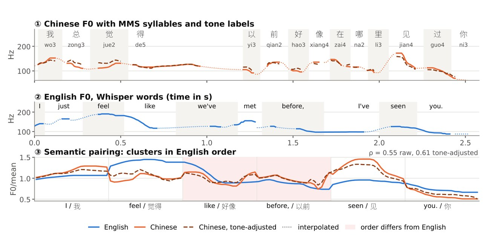
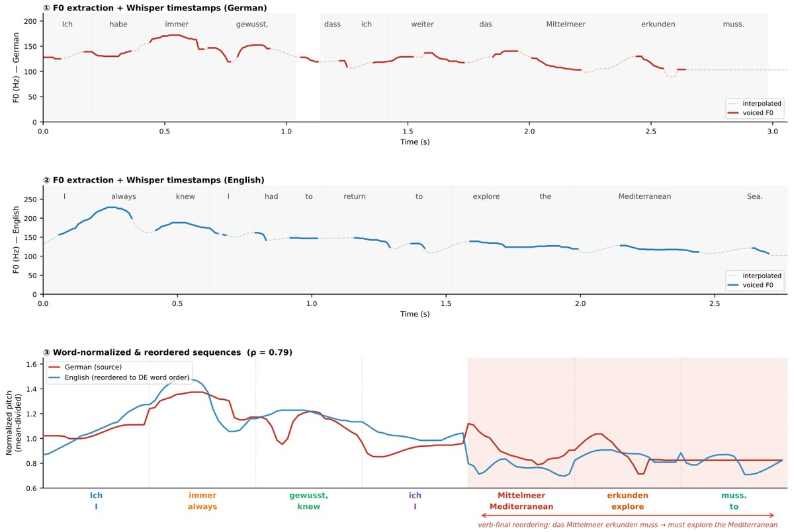

Research & Publications
Research projects at Johns Hopkins University, each with its publication.
-

Lexical Tone & Word Order in Translation
2026Center for Language and Speech Processing, JHU
Does prosody still carry across translation when languages differ in lexical tone and word order? English paired with Mandarin, Thai, Vietnamese, Japanese, and Korean.
PaperLexical Tone and Word Order Matter in Translation: Prosodic Correspondence Across LanguagesUnder review -

Cross-Lingual Prosody in Dubbed Speech
2026Center for Language and Speech Processing, JHU
Does the way something is said survive translation? A large-scale study of word-level prosody across 300K dubbed utterance pairs.
PaperIs Prosody Lost in Translation? Fine-Grained Cross-Lingual Prosody Similarity Across LanguagesFindings of EMNLP 2026 -

ThoughtTrace
2026Social Cognitive AI Lab, JHU
What are users thinking but not typing? A dataset of user thoughts in real-world LLM interactions, and a test of whether models can recover them.
PaperThoughtTrace: Understanding User Thoughts in Real-World LLM InteractionsRLxF Workshop at ICML 2026Best Paper Award